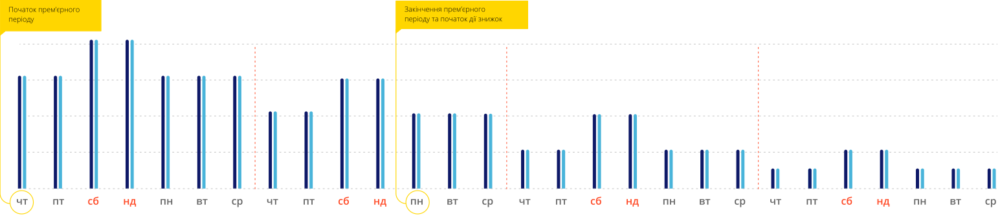
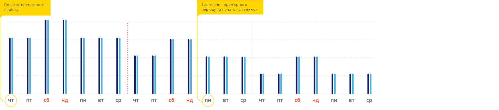
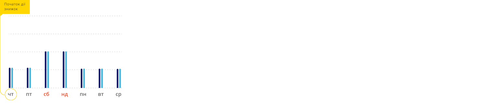

Вартість квитків
Вартість квитків у гривнях – від 50 грн. Вартість квитків у бонусах – від 600 бонусів.
Ціни на квитки у гривні та бонусах відрізняються для кожного фільму, сеансу, технології та формату.
Вартість квитків на фільми, що демонструються у прем’єрному періоді, а також на найбільш очікувані фільми підвищена, проте поступово зменшується (дивися графік зниження цін нижче).
Ціни на квитки на менш очікувані фільми знижені з першого дня прокату.
Прем’єрний період (коли не діють жодні знижки) для кінозалів ІМАХ та 4DX часто складає 11 днів, для звичайних залів – 7 днів. На менш очікувані фільми знижки можуть діяти з першого дня прокату. Час прем’єрного періоду може змінюватися, залежно від домовленостей із дистриб’ютором.
Найбільш очікуваними фільмами є кінострічки, які мають найвищий рейтинг очікування, дуже часто у зйомках беруть участь найпопулярніші кінозірки. Це фільми, які більшість кіноманів обов'язково подивляться у кіно. Наприклад, стрічки про «Хоббіта», продовження легендарної саги «Зоряні війни» та інші зразки світового кіно.
Графік зниження цін на квитки виглядає так:
Фільми у прокаті
Ціни на квитки на дуже очікуваний фільм
Фільм у прокаті чотири і більше тижнів
Ціни на квитки на очікуваний фільм
Фільм у прокаті три тижні
Ціни на квитки на менш очікуваний фільм
Фільм у прокаті два тижні

Ціни на квитки на менш очікуваний фільм
Фільм у прокаті один тиждень
ціни у гривнях
ціни у бонусах